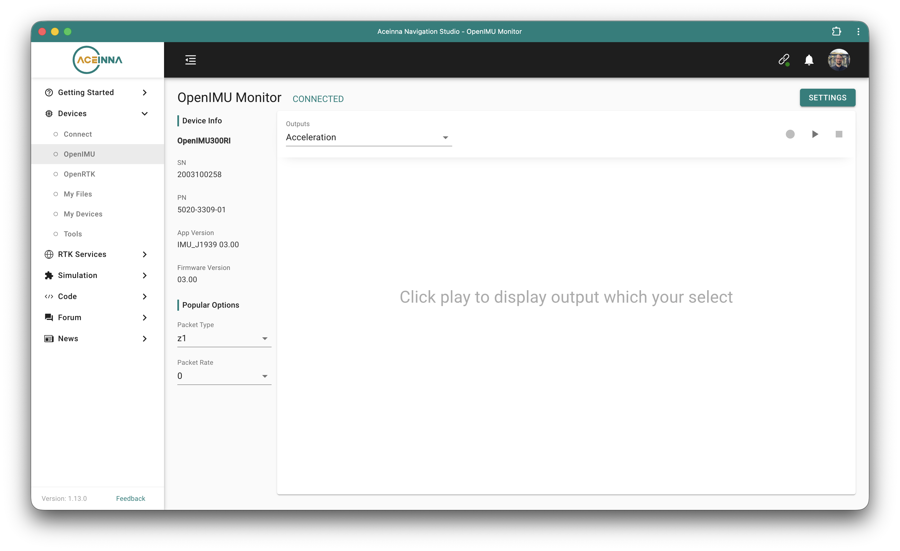
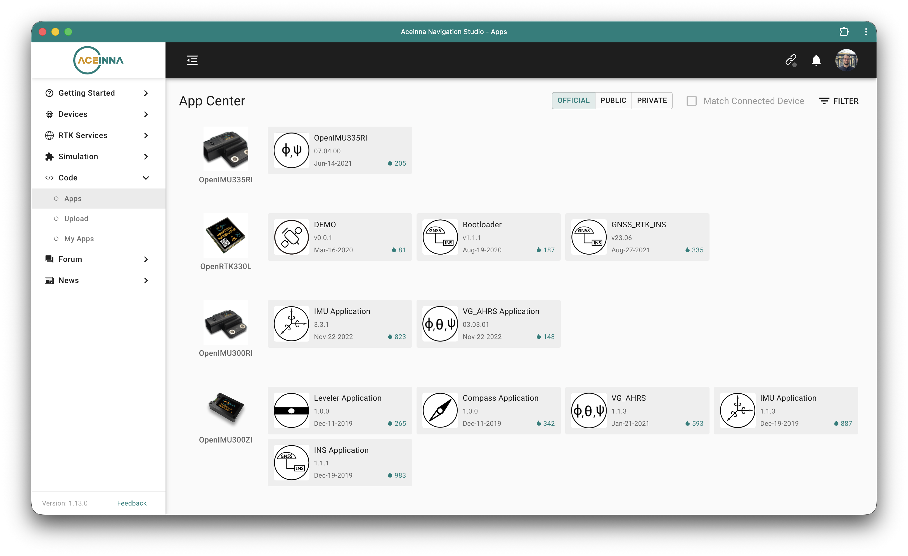
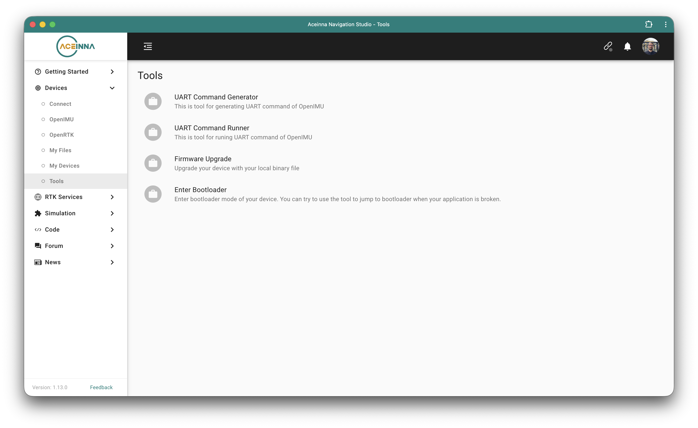

IMUs¶
This section handles all the setup steps needed for the supported IMU types: MicroStrain, OpenIMU, and MPU9250. Although each one requires a different method of configuration, Epically Powerful makes interacting with them through Python essentially identical. Importantly, you can also use any combination of these sensors together in the same setup without issues.
MicroStrain¶
The low level driver library for the MicroStrain IMUs is maintained by MicroStrain by HBK, and is routinely updated on their GitHub page. However, the installation is not automatically included with the pip or conda Epically Powerful installation. Epically Powerful can be used without it, though the MicroStrain IMU functions and tools will not be available. There are two options for installing the package.
Using the Epically Powerful MSCL Installation Helper¶
Epically Powerful comes with a helper script that will attempt to automatically install the MSCL dependency. Once you’ve installed Epically Powerful, run ep-install-mscl. By default, this will grab the version of MSCL that corresponds with your hardware and Python version and attempt to install it into your base Python environment. Additionally, if you are using a virtual environment or conda environment, you can run it with the -E flag, which will attempt to install it into your virtual environment, or you can use -d to manually specify a directory to copy the files into. After this, you will have access to the all the MicroStrain IMU functionality.
Run this to install the library in your virtual environment:
$ ep-install-mscl -E
Manually Installing MSCL¶
We recommend using the Epically Powerful installer, but in case you need the manual version for your application, we are providing that below.
First, you need to download the installer. This is a .deb file hosted on the release page of the MSCL GitHub. We recommend going one release back, as the library is only built for Python 3.13 or 2.7 in the latest builds.
Once this is installed, running
sudo dpkg -i MSCL_<architecture>_Python<version>_v<release>.deb(specifying your computer’s architecture, Python version, and release) will install the package to the base Python installation inside its dist-packages folder. If you are not using a virtual environment, this is all you need to do, after which you can move on to actually building your robot!If you have a virtual environment, you will need to copy the installed files into one of the folders in that path. If you are using venv or miniforge, the appropriate command will be
cp /usr/share/python3.<version>/dist-packages/*mscl* <path/to/env>.
Once this MSCL dependency is handled, you should be all ready to go. To verify that things are set up properly, you can open up a terminal on your single-board computer, then type ep-stream-microstrain-imu --imu-serial-id [SERIAL_ID], where your SERIAL ID is the ID of the MicroStrain IMU (last 6 digits of the serial number, e.g. 133932).
OpenIMU¶
OpenIMUs require per-unit setup, but have a number of well-documented resources online that make this process easier to follow. For regular operation, they use the same CAN protocol as the Epically Powerful-supported actuators, so follow the CAN setup steps for each single-board computer on the Computer page to get these working.
Flashing new OpenIMUs¶
In these setup steps, we will configure an OpenIMU300RI sensor. To set up a new unit, you will first need to wire the OpenIMU for UART communication to an external computer (see this wiring diagram for wiring reference). Make sure you are properly providing 12-24V to the OpenIMU over the power and ground lines or it may not turn on. For UART communication, you will need to ensure that you are properly connected to an RS232-to-USB adapter like the one on the ordering sheet. This adapter must use RS232. Simple serial communication will not work. After plugging in and powering on your setup and connecting it to an external computer, download fresh IMU firmware onto that computer:
In Google Chrome (other browsers won’t work) to ACEINNA’s web development studio and click “Get Started”
Download the webserver for your operating system from their Devices/Connect page and run it in your terminal
Connect your IMU. If the IMU connects, you should see a readout like this:

On the web development studio, keep reloading the webserver until your IMU shows up. You should be able to stream data from it to a graph visualizer on the page. (Hint: make sure to set the configurable packet rate dropdown box to more than 0 Hz). 
Go to the IMU app page and download whichever IMU model-specific .bin firmware file you’d like from the available selection 
Go to the Firmware Upgrade page of the web development studio, select your connected sensor and upload the new firmware .bin file. Once it uploads, you can try reading from it on your device! 
Open up a terminal on your single-board computer, then type
ep-stream-open-imu --imu-can-id [CAN_ID], where your CAN ID is the ID of the newly flashed OpenIMU. It should start publishing the data, at which point you’re good to go!
{kind=link}
{kind=link}
{kind=link}
MPU-9250¶
The MPU-9250 IMU series is easy to use, but requires some setup and checks to ensure that I2C buses are configured appropriately.
Checking I2C on NVIDIA Jetson Orin Nano (a.k.a. Super)¶
Run the command i2cdetect -y -r 7 in your terminal. It should populate a table with the I2C addresses of connected devices. (On the second I2C bus, use i2cdetect -y -r 1). You may need to use the sudo command in front of i2cdetect to get things to function properly.
Configuring I2C on Raspberry Pi¶
First, you’ll need to enable I2C on your Pi using the following steps:
Open up the Raspberry Pi Configuration Tool from the Preferences menu in the desktop, or run
sudo raspi-configfrom the terminalGo to Interface Options
Move to the I2C option and enable it
Restart your Pi
To enhance communication with your MPU-9250 unit(s), there are a couple steps to both speed up I2C bus communication and (if you’re using more than 2 MPU-9250 IMUs) enable another I2C bus on the 40-pin GPIO layout on your Pi:
In your terminal, type
sudo nano /boot/firmware/config.txtUnder the line “# Uncomment some or all of these to enable the optional hardware interfaces”, add the following lines (if they are not already there):
dtparam=i2c_arm=on,i2c_arm_baudrate=400000 # Speed up your I2C bus communication
dtoverlay=i2c-gpio,bus=4,i2c_gpio_delay_us=1,i2c_gpio_sda=23,i2c_gpio_scl=24 # Enable a second I2C bus on GPIO pins 23, 24
Restart your Pi
Note
The pins you use for the second I2C bus may not be the ones you think. The GPIO pin numbers you set (in the above code block, 23 and 24) correspond to layout pins 16 and 18 respectively. This guide provides an interactive reference.
Steps to set up a single IMU¶
Once you’ve enabled all necessary I2C buses, you can set up your sensors. To connect to an MPU-9250, follow the below steps:
Using DuPont (jumper) pins, connect the MPU-9250’s VCC (power), GND (ground), SCL (clock) and SDA (data) pins to the corresponding pins of your I2C bus on the 40-pin layout

On your single-board computer, run the command
i2cdetect -y -r [I2C_BUS], putting the number for your I2C bus. If you’ve connected the MPU-9250 pins with the above step, you should see68show up on the terminal readoutTo verify that you can stream data from this sensor, run the Epically Powerful command
ep-stream-mpu9250-imu --i2c-bus [I2C_BUS] --address [ADDRESS]in your terminal, with[I2C_BUS]as your I2C bus and[ADDRESS]as the I2C address of the IMU (here 68).
Note
On a Raspberry Pi, the default I2C bus number is 1. On a Jetson Orin Nano, the default number is 7. Secondary I2C buses on each device will each have their own numbers.
Reading from more than one IMU¶
How many sensors you’d like to simultaneously read from will dictate your layout steps:
2-4: For the fastest communication, set up two sensors per I2C bus. As each IMU has the same I2C address by default, you will need to set the address of one IMU per bus from the baseline
0x68to0x69(hex format, 104 and 105 in base 10). You can do so by shorting the VCC and AD0 pins on the IMU, as shown here:
5-16: Connect a multiplexer between your IMUs and one of the connected I2C buses, leaving the IMUs on the other bus alone. Epically Powerful provides support for the TCA9548A, a common I2C multiplexer unit. Instead of plugging all your IMUs from one bus directly into its GPIO pins, now you plug the SDA and SCL lines of each unit into a separate ‘channel’ on the multiplexer, for a maximum of two sensors per channel (as long as the AD0 pin on one is pulled high to give it the non-default
0x69address). Then, you plug the multiplexer into the bus. Using this configuration, you can go from streaming data from 2 units per I2C bus to 16 units per I2C bus.
Note
Multiplexers function by switching sequentially between channels, so adding more sensors on more channels will reduce the rate at which you can stream data over I2C. As a reference point, we validated streaming data at rates at or slightly greater than 100 Hz on a Raspberry pi connected to two IMUs on one bus and four IMUs (two per channel) on another bus with a multiplexer.